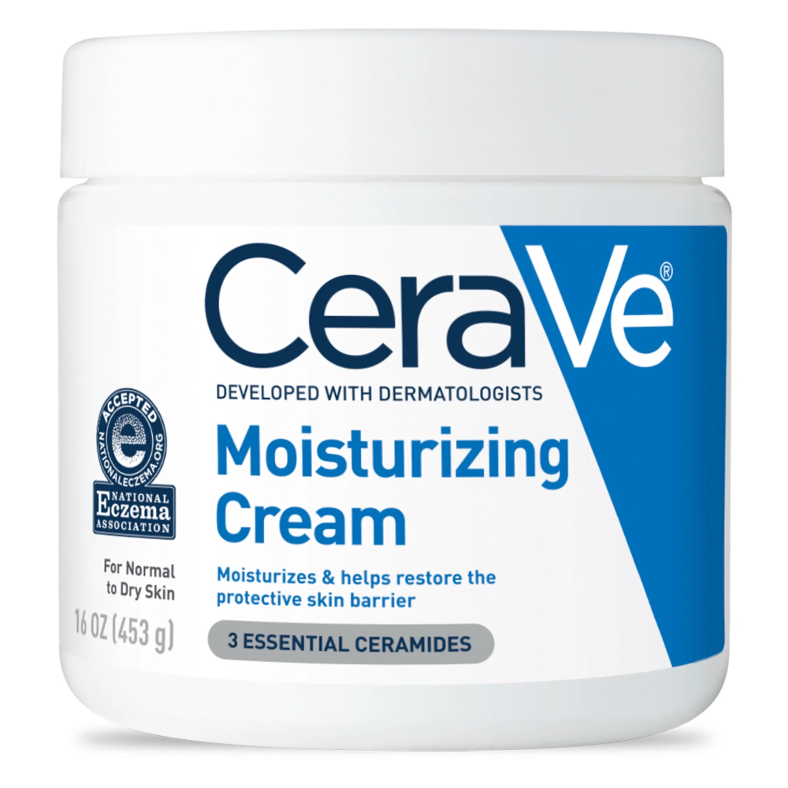
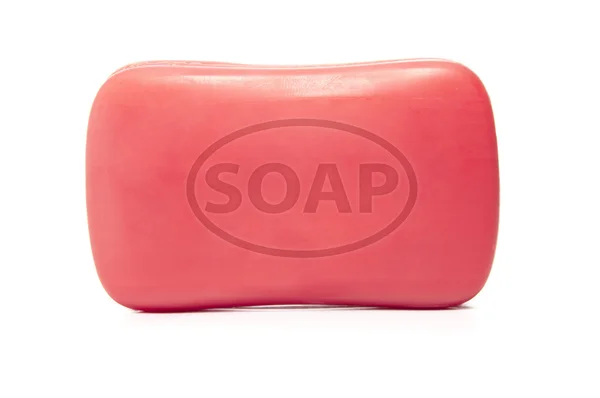

Besides culinary uses, olive oil is also widely found in moisturizers, soaps, lubricants, etc. Thanks to its moisturizing property and rich antioxidant content, it makes the products more desirable, such as smoother, water-retaining, and anti-aging.

moisturizer

soap
lubricant